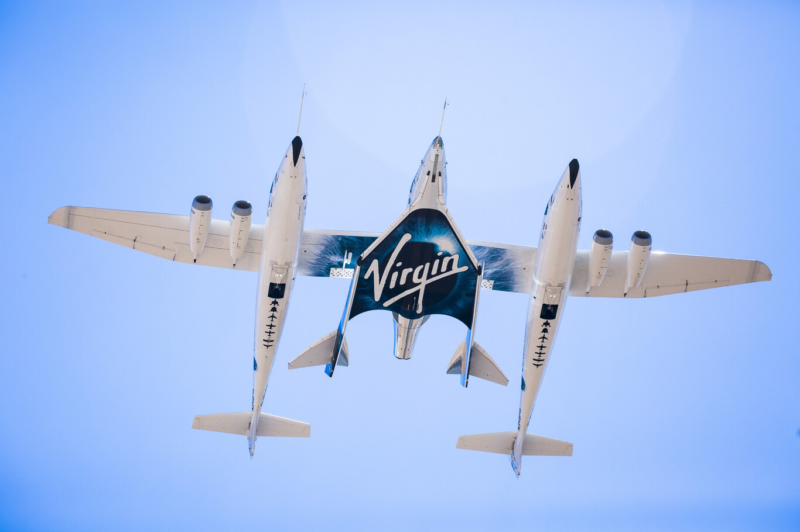

Vuelos espaciales de Virgen Galactic
La compañía Virgin Galactic dio a conocer sus resultados financieros del tercer trimestre de 2021,
donde informan que entre otras ganancias, han logrado vender aproximadamente 700 boletos para sus
próximos viajes espaciales, cada uno a un precio de 450,000 dólares por asiento, es decir, unos 9
millones de pesos cada uno.
El aumento, dado a conocer en el mes de agosto tras el vuelo exitoso de Richard Branson que llegó a
los 91 kilómetros de altura, muy cerca de la línea Kármán. Este evento, marcó un crecimiento en la
tarifa que originalmente estaba en 250,000 dólares, precio al que se ofrecieron los asientos para
algunos clientes hace un par de años.
Esta nueva etapa del servicio comercial de la compañía ya tiene una fecha tentativa para iniciar,
durante el cuarto trimestre de 2022. Antes de que llegue la fecha del lanzamiento inicial, Virgin
Galactic tiene como objetivo el lograr vender 1,000 reservas de asientos al precio actual, que según
la compañía "ha sido bien recibido".

Esta nueva etapa del servicio comercial de la compañía ya tiene una fecha tentativa para iniciar,
durante el cuarto trimestre de 2022. Antes de que llegue la fecha del lanzamiento inicial, Virgin
Galactic tiene como objetivo el lograr vender 1,000 reservas de asientos al precio actual, que según
la compañía "ha sido bien recibido".